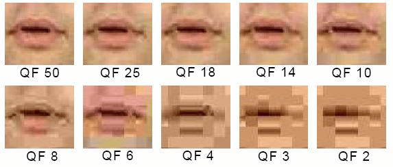
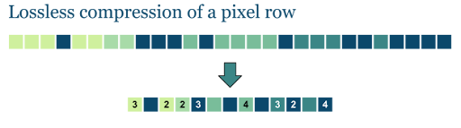
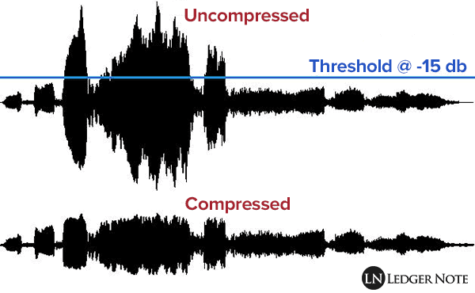

Ruimte Besparen en Snelheid Verhogen
Stel je voor: na het maken van prachtige foto's of het downloaden van enkele video's is je opslagruimte vol. Of je moet langer wachten om geluidsbestanden met veel informatie af te spelen. Dat is natuurlijk niet handig! Daarom bestaat bestandscompressie. Met dit systeem kunnen bestanden worden verkleind, zodat ze sneller kunnen worden gedownload en opgeslagen.

Lossy vs. Lossless
Er zijn twee soorten compressie: lossy en lossless. Beide methoden hebben hun eigen voor- en nadelen, afhankelijk van je behoeften en het type bestanden dat je gebruikt. Op deze pagina vertel ik je meer over deze compressiemethoden en andere belangrijke aspecten die hierbij belangrijke rol meespelen. Voor foto's wordt meestal de JPEG-methode (Joint Photographic Experts Group) gebruikt. Deze methode zorgt ervoor dat de bestanden veel kleiner worden met minimaal verlies aan kwaliteit.
lossy compressie
Lossy compressie is een systeem om de bestandsgrootte te verkleinen door zinloos of minder belangrijke gegevens te verwijderen. Deze techniek wordt vaak automatisch toegepast in onze telefoons, bijvoorbeeld bij het maken van foto's of het opnemen van video's, zonder dat je daar zelf iets voor hoeft te doen.
De voordelen van lossy compressie zijn echt handig en verbeteren het gebruik van je apparaten. Een groot voordeel is dat je bestanden tot wel 90% kunt verkleinen, waardoor je meer opslagruimte overhoudt. Dit is vooral nuttig als je veel foto's, video's of muziek op je telefoon hebt staan. Daarnaast zorgt die kleinere bestandsgrootte ervoor dat andere bestanden sneller kunnen worden gedownload en gedeeld. Het is echt fijn om zo snel toegang te hebben tot verschillende media, zonder dat je te veel opslagruimte kwijt bent!
Naast de voordelen zijn er natuurlijk ook nadelen aan lossy compressie. Een belangrijk nadeel is dat de kwaliteit van het bestand kan verminderen na compressie. Dit gebeurt vooral bij sterke compressie, waardoor het bestand minder scherp en gedetailleerd kan worden. Een ander nadeel is dat de toegang tot het originele bestand niet meer mogelijk is zodra het bestand is gecomprimeerd. Je kunt de verloren kwaliteit niet terugkrijgen, wat voor porbleem kan zorgen als je de oorspronkelijke details nodig hebt.

Zoals je ziet in de afbeelding ↑hierboven↑, is de kwaliteit van alle drie de foto's goed, maar is er een groot verschil in bestandsgrootte. Dit is voordelig voor de opslag.
lossless compressie
Lossless compressie wordt vaak gebruikt voor tekstbestanden en afbeeldingsformaten zoals PNG. Met het lossless systeem worden bestanden op een slimme manier opgeslagen. De pixels van een afbeelding bijvoorbeeld worden niet verminderd, maar efficiënt opgeslagen. In tegenstelling tot lossy compressie biedt lossless compressie zekerheid over de kwaliteit van het originele bestand. Bij deze methode gaan er geen gegevens verloren, waardoor het altijd mogelijk is om het bestand volledig te herstellen. Een nadeel is echter dat lossless compressie niet zoveel ruimte bespaart als lossy compressie, waardoor het minder efficiënt is voor toepassingen waar de bestandsgrootte cruciaal is.

Uiteindelijk wordt er een afweging gemaakt tussen het gebruik van lossy of lossless compressie. Deze keuze hangt af van de balans tussen kwaliteit en bestandsgrootte.
Geluidsfragmenten Comprimeren
Voor geluid geldt hetzelfde: compressie wordt gebruikt om de bestandsgrootte te verkleinen en opslagruimte te besparen. Welke methode er wordt toegepast, hangt af van wat de gebruiker belangrijk vindt: kwaliteit of opslagruimte.
Lossy compressie kan bijvoorbeeld worden toegepast met MP3-bestanden. Dit systeem verwijdert audio-informatie die moeilijk hoorbaar is voor mensen, waarbij leeftijd een rol kan spelen. Door deze verwijdering worden de bestanden kleiner, wat zorgt voor meer opslagruimte. Toch, is er een nadeel: bij hoge compressie treedt kwaliteitsverlies op, wat irritant kan zijn voor professionele gebruikers die waarde hechten aan details in de audio.
Lossless compressie kan bijvoorbeeld worden toegepast met FLAC-bestanden. Dit systeem behoudt de audiokwaliteit en details, wat belangrijk is voor professionele gebruikers. Het nadeel is dat de bestandsgrootte groter is dan bij lossy compressie, wat minder gunstig is voor de opslagruimte. Hierdoor moet de gebruiker kiezen tussen het belang van kwaliteit en opslagruimte.

Sample rate
Meestal wordt voor muziek 44,1 kHz gebruikt, wat betekent dat er 44.100 samples per seconde worden genomen. De sample rate bepaalt hoe vaak een geluidssignaal per seconde wordt gemeten en speelt een belangrijke rol bij de bestandsgrootte. Deze kan variëren van enkele megabytes tot zelfs gigabytes of terabytes voor langere geluidsfragmenten, vooral ibij professionele gebruik.